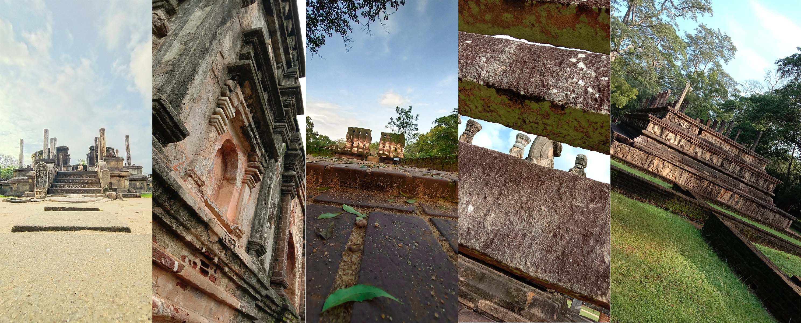

Ancient
POLONNARUWA
POLONNARUWA

Polonnaruwa Kingdom or the Ancient city of Polonnaruwa was the second capital of Sri Lanka for three centuries between the 11th to 13th century after the destruction of Anuradhapura Kingdom in 993. It is located in north central province of Sri Lanka. Due to its archeological prominence and the ancient technological superiority UNESCO declared Polonnaruwa as a World Heritage in 1982 under the name of Ancient City of Polonnaruwa.
Polonnaruwa was the first declared capital city by King Vijayabahu, who defeated Chola invaders in 1070 to reunite the nation once more under a local leader. During the time of the great King Parakramabahu who led the country between the times of 1153 – 1186 sustained such heroic scales in rice cultivation by constructing the massive irrigation network with reservoirs that look like natural in land seas. Sri Lanka became known as the Granary of the Orient. Polonnaruwa consists of ruins of the glorious kingdom of the Great King Parakramabahu. The richness and the glamor of this kingdom are still evident. Today the ancient city of Polonnaruwa remains one of the best planned archaeological relic sites in the country, standing testimony to the discipline and greatness of the Kingdom’s first rulers.
The time of King Parakramabahu was considered as the Golden Age of Polonnaruwa. Trade and agriculture flourished under the patronage of the king, who was so adamant that no drop of water falling from the heavens was to be wasted and each was to be used toward the development of the land. Hence, irrigation systems that are far superior to those of the Anuradhapura age were constructed during Parakramabahu’s reign – systems which to this day supply the water necessary for paddy cultivation during the scorching dry season in the east of the country. The greatest of these systems is the Parakrama Samudra or the Sea of Parakrama.